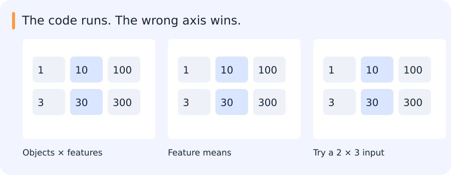

The code runs. The wrong axis wins.
Three objects, three features: subtracting a length-three mean works either way. A square matrix can hide a broadcasting bug.

| Notice | Interpret | Check |
|---|---|---|
| (3, 3) hides the mistake | (3,) aligns on the right | A non-square case exposes it |
Reveal the catch
A valid shape is not necessarily the intended operation. Give each axis a meaning.
In code: Make the axis explicit
import numpy as np
x = np.array([[1, 10, 100], [3, 30, 300]])
feature_means = x.mean(axis=0, keepdims=True)
centered = x - feature_means
print(centered.tolist())Expected output:
[[-1.0, -10.0, -100.0], [1.0, 10.0, 100.0]]Keeping the mean as (1, 3) makes the intended feature axis visible.
Try it in 60 seconds: Write two normalizations and test them on [[1,10,100],[3,30,300]].
Read for understanding, not page completion. Skip what you can already explain.
Jump to a concept
Arrays describe both values and layout
A NumPy array has shape, dtype, strides and an underlying storage buffer. A three-channel image could be HWC or CHW; the number of dimensions alone does not distinguish them. Define channel order, value range, coordinate units and batch dimension. An unsigned byte subtraction can wrap around; convert to a suitable signed or floating type before computing differences. A reshape reorganizes indexing and may share storage, while a transpose changes axis order. Neither operation by itself converts RGB to BGR.
Indexing, slicing and broadcasting
Basic slices often return views. If b = a[:, :3], editing b may change a. Advanced integer or boolean indexing normally produces a copy, so editing that result may leave a unchanged. Check the intended mutation explicitly rather than guessing from matching printed values. A mask over rows is not a mask over channels. Keep stable sample IDs alongside filtering and reordering.
Broadcasting aligns shapes from the right. Dimensions are compatible if they are equal or one is 1. For an N-by-D feature matrix, a length-D mean can be subtracted per feature. A length-N vector is not automatically a column of sample weights: reshape it to N-by-1. With N equal to D, the wrong operation may run successfully and normalize the wrong axis. Design a non-square counterexample. Vectorized code moves loops into efficient implementations, but materializing N-by-N distances can use far more memory than chunked computation.
Numerical work needs scale and stability
Floating-point sums depend on order and precision; compare with tolerances justified by scale, not exact equality by default. Normalize features using statistics fitted only on training data and reuse those values at validation/inference. Protect zero denominators explicitly and report degenerate inputs. If every pixel in a patch is constant, normalized correlation has no defined variance normalization; returning a perfect score would invent evidence.
Pandas is an indexed data model
A DataFrame pairs columns with row labels. Operations align on index labels, which can silently reorder or introduce missing values. Use loc for label-oriented selection and iloc for positions. A merge can multiply rows when keys are not unique. Before joining predictions and labels, assert expected key uniqueness and use merge validation; inspect unmatched IDs. Grouping by source video or acquisition session is different from grouping by class and is essential when creating independent evaluation sets.
Missingness carries information. Distinguish absent measurements, failed parsing and a genuine zero. Choose imputation based on the data-generating process; fit its parameters on training data. A date parsed in the wrong timezone can change a cohort or temporal split. Persist schema and units and verify that saving and reloading preserve intended meaning.
EDA and useful visualizations
Start with row counts, duplicate IDs, missingness, ranges and label frequencies. Plot distributions split by class, source, sensor or time, rather than only a global average. Scatterplots reveal relationships and outliers; histograms show distributions and depend on binning; box/violin plots compare groups; a confusion matrix shows directional mistakes. Seaborn gives concise statistical plots, Plotly Express adds hover and selections, and Bokeh offers interactive plots and HoverTools. A library choice does not repair a biased sample.
For an experiment comparison, show effect size and uncertainty alongside the aggregate score. Add representative successful outputs and deliberately selected failure cases, then state how they were chosen. An attractive montage of easy cases is not an unbiased evaluation. Export the plotting data and configuration so another person can regenerate the figure without rerunning training.
Retained practice routes
The legacy NumPy selection was: 1–31 except 2, 4, 5, 23, 27, 28, 31; then 35, 37–40, 45, 46, 50; then 52–55, 58, 59, 61, 64, 65, 70–72, 74, 75, 83, 89. Use those exercises as remediation if useful, with no requirement to repeat an already understood concept. The Pandas route selected one dataset from sections 1–5 and optionally the Titanic exploration. Boids illustrates interacting agents, vectorized pairwise distances and update-order effects. The current application exercises supply the default practical setting; these historical exercises remain available through the source map.
Original source references and provenance
Original teaching text covering the cited topics, not a verbatim mirror. These references are provenance; no external reading is required to use this chapter.
- http://cs231n.github.io/python-numpy-tutorial/
- http://www.numpy.org/
- https://colab.research.google.com/github/pb111/Data-Analysis-and-Visualization-with-Python/blob/master/Plotly%20basics.ipynb#scrollTo=H6Z5_cV2IEs7
- https://github.com/guipsamora/pandas_exercises
- https://github.com/guipsamora/pandas_exercises/tree/master/07_Visualization/Titanic_Desaster
- https://github.com/rajivramanjani/UdemyPythonDSML/tree/master/06-Data-Visualization-with-Seaborn
- https://github.com/rougier/numpy-100
- https://plotly.com/python/plotly-express/
- https://www.kaggle.com/code/kanncaa1/plotly-tutorial-for-beginners
- https://www.kaggle.com/learn/overview
- https://www.kaggle.com/pmarcelino/comprehensive-data-exploration-with-python
- https://www.labri.fr/perso/nrougier/from-python-to-numpy/#id5
- https://www.tutorialspoint.com/numpy/index.htm
- https://www.tutorialspoint.com/python_pandas/index.htm
- https://www.tutorialspoint.com/python_pandas/python_pandas_indexing_and_selecting_data.htm